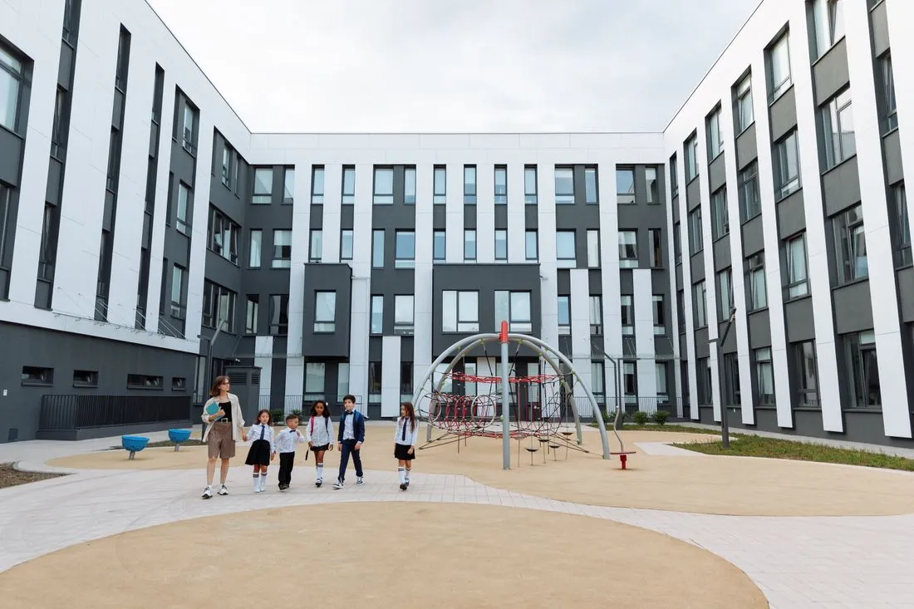

- Location
- Dundee
- Year
- 2025
- Floor area
- 3,200 m²
- Client
- Dundee City Council
- Status
- Completed
- Type
- Education
Materials
- Birch plywood
- Terrazzo
- Green roof
- certified
- Passivhaus
- pupils
- 420
- classrooms with outdoor access
- 100%
Brief
A 420-pupil school with outdoor learning at its heart, built to Passivhaus standards on a limited budget.
Approach
Every classroom has its own door to a covered veranda and a garden bed. Corridors are wide enough to teach in, with deep window seats and borrowed daylight.
Outcome
The school is certified Passivhaus, and teachers report calmer corridors and children who ask to stay out for lessons.